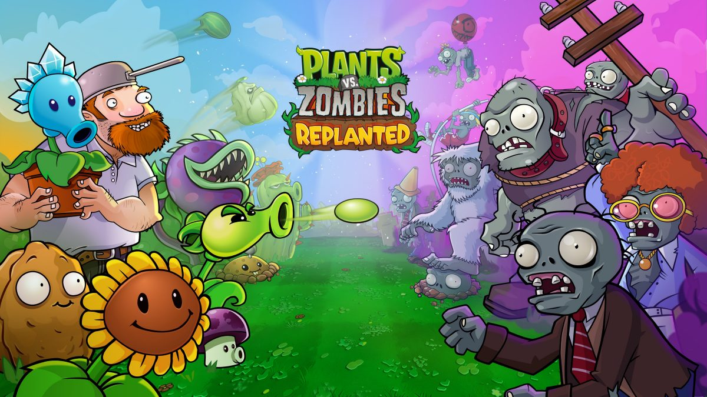

Open World / Soulslike
《艾尔登法环》
我最喜欢研究它怎样用远景地标、赐福和死亡回收建立探索意图。它让我确认，开放世界最重要的不是任务图标够不够多，而是我能不能自己产生“下一步想去那里”的念头。
01 / Played & Studied
我不想把游戏名堆成一张清单。每玩一款游戏，我更在意它怎样建立目标、怎样让我愿意重复，以及哪些设计能真正迁移到自己的项目。
Open World / Soulslike
我最喜欢研究它怎样用远景地标、赐福和死亡回收建立探索意图。它让我确认，开放世界最重要的不是任务图标够不够多，而是我能不能自己产生“下一步想去那里”的念头。

Action RPG / Cultural Adaptation
我会把章节推进、Boss 表演和传统文化的视觉转译放在一起看。它让我意识到，高密度内容不一定依赖巨量地图，只要战斗、场景和叙事共同指向一个记忆点，章节同样能做出完整的旅程感。

Action / Skill Mastery
我反复观察格挡、架势和读招怎样把操作反馈变成学习曲线。真正让我重试的并不是“它很难”，而是每次失败后，我都能说清楚刚才到底错在了哪里。

Narrative RPG / Quest Design
我最关注支线任务里的角色动机、选择后果和世界状态。它让我看到，一条好支线不只是奖励包装，我做出的选择会反过来改变自己对角色和世界的理解。

Racing / Open-world Festival
我会把几代作品连起来看：驾驶手感负责留住我，季节、地图、车辆收集和嘉年华氛围负责不断给我新的出发理由。我尤其在意它怎样降低竞速门槛，又不牺牲车辆调校和路线选择的深度。

Casual / Lane Defense
我喜欢它把复杂策略藏进最直观的草坪里：植物是功能，阳光是预算，路线是压力。我几乎不用读长教程，就能在失败后主动换阵容，这种“看得懂、想得深”的轻量体验是我做休闲玩法时最想保留的东西。

Mobile SLG / Social Strategy
我会同时看两条线：火炉、建造和英雄养成怎样给我稳定的短期目标，联盟、活动和战力比较又怎样把个人成长拉进长期社交。它最值得我研究的，是轻量包装如何承接一套很深的 SLG 留存结构。
02 / Genre Lab
我先确认自己为什么愿意开始，再追踪几十秒内反复做的选择，最后检查失败反馈和长期内容能不能把我带回下一轮。
我的参考：《艾尔登法环》《只狼》《黑神话：悟空》
我不把高难度当卖点。只有失败能给我下一次可复用的信息，我才愿意继续挑战。
我会怎么用：我在《暮鸦之墓》中优先明确敌人前摇、攻击冷却、命中反馈和复生泉回收点，让玩家像我一样能看懂失败。
我的参考：《艾尔登法环》《巫师 3》《极限竞速：地平线》系列
我不想只是清图标。我希望远景、道路、事件和奖励不断给我一个“绕过去看看”的理由。
我会怎么用：我在《暮鸦之墓》中先把世界收敛为主城、野外和副本，用安全度与收益差异验证路线判断，再决定要不要扩大地图。
我的参考：《极限竞速：地平线 3 / 4 / 5 / 6》
我先被速度和风景吸引，再被车辆收集、路线熟练度和朋友间的比较留下来。
我会怎么用：如果我做竞速玩法，会先让新玩家在一分钟内感到“车是听我的”，再用车型、地形和赛事规则逐层增加深度。
我的参考：《巫师 3》《黑神话：悟空》
我不想让剧情只在战斗之间解释世界。我更在意自己的行动有没有改变人物关系和后续处境。
我会怎么用：我在《雾港疑云》中用真相度和镇民信任记录行动后果，让结局来自我一路做过的判断，而不是最后突然出现的一个按钮。
我的参考：《植物大战僵尸》系列
我觉得休闲不等于简单。它只是把理解成本放低，再把组合空间和节奏变化留给我慢慢发现。
我会怎么用：我做轻量玩法时，会先保证规则能从画面和结果里读出来，再用新单位、新路线和资源变化扩展重玩空间。
我的观察重点：枪线、地图控制、队伍信息和交火后的局势重建
我知道枪法能赢下一次交火，但我更关心自己能不能持续读懂信息、位置和团队节奏。
我会怎么用：我会先保证信息可读、输入一致和失败可归因；如果基础公平没有成立，我不会急着用新角色和新武器增加变量。
我的设计验证：《放开那个女巫》《三国文字合成塔防》
我判断策略感不来自规则数量，而来自我手里的资源有限、答案不止一个，而且每个选择都有清晰代价。
我会怎么用：我用 3 AP 控制《放开那个女巫》的回合预算，也用金币、粮食和 8 条合成线构成《三国文字塔防》的长期资源冲突。
我的参考：《无尽冬日》
我先为下一次建筑升级上线，后来真正影响我是否留下的，是联盟里还有没有人等我一起完成目标。
我会怎么用：如果我做长线运营，我会先让每次上线都有一个可完成的小目标，再让联盟目标承接个人成长，避免只靠红点和数值膨胀拉回玩家。
03 / Global Readiness
我不会把本地化理解成翻译收尾。对我来说，它从玩法信息、UI 空间、文化语境、付费习惯到社区运营都要一起进入版本计划。
我会先把新手目标和付费信息说清楚，再检查分级、隐私、无障碍和节日活动语境。我希望玩家看得懂价值，也始终知道自己为什么付费。
我不会只把中文换成日文。我会重新检查角色称谓、语气层级、文本换行和配音情绪，让人物关系在日语里仍然成立。
我会把技能说明、概率规则和竞技公平写得更透明，同时重点验证中端 Android 设备、网络波动和版本更新速度。
我会避免用英文版本兜底。德语文本长度、法语表达习惯、GDPR 与退款说明都会直接影响 UI 和发行流程，所以我会让它们更早进入验收。
我会从阿拉伯语 RTL 布局开始重排界面，再检查服装、宗教、社交表达和斋月活动语境，而不是上线前才删除敏感内容。
我会优先照顾设备性能、安装包、流量和弱网体验，再结合当地支付、价格带与社群渠道调整运营方式，让版本先跑得动，再谈内容规模。
我的适配顺序：我先排查文化与合规风险，再处理语言和 UI，随后验证设备、付费和活动节奏，最后用商店、社区与数据反馈继续修正版本。
04 / Analysis Method
我先找到自己追求的结果，再逐层检查系统有没有真的服务这个结果。
我先问自己：选择这类游戏时，我最想获得哪一种独特感受。
我会记录 30 秒到 3 分钟内，自己反复做了哪些判断与动作。
我会拆开时间、空间、资源、信息和操作，看它们怎样迫使我取舍。
我会看关卡、任务、敌人和奖励怎样分阶段教会我，再检验我。
我会确认成功和失败是否讲清原因，并让我自然产生下一步目标。